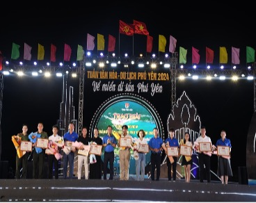
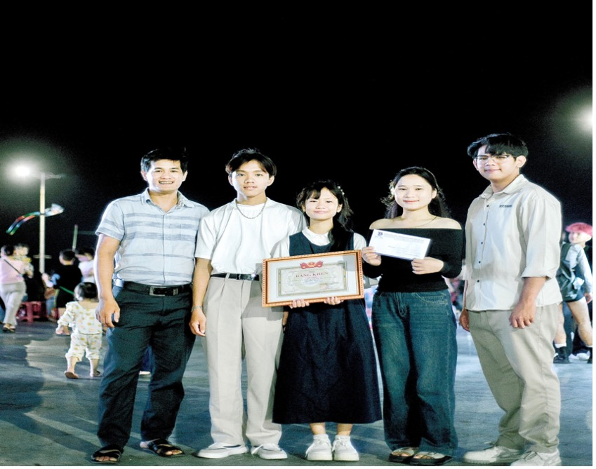
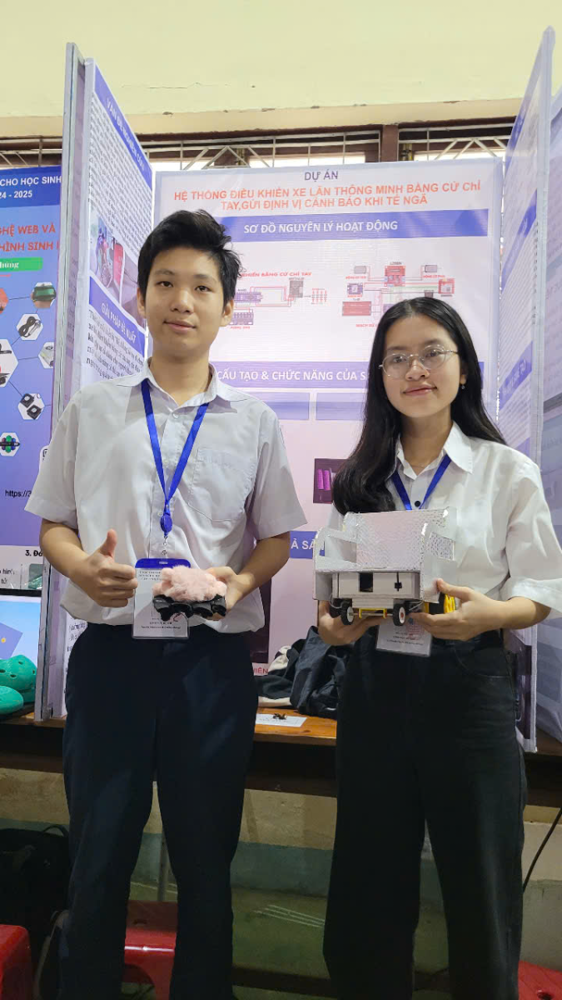
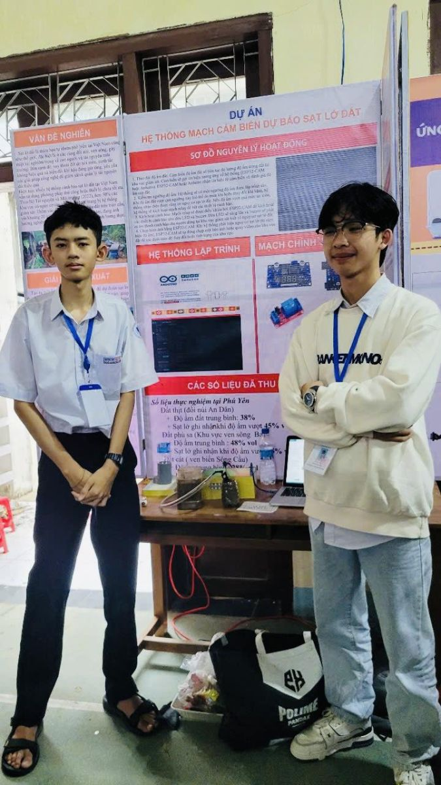

Học tập mỗi ngày,toả sáng mỗi giờ,không ngừng học hỏi
Nơi khởi nguồn sáng tạo
Lao động hăng say,làm việc nhiệt tình
Chào mừng bạn đến với trang kĩ thuật và nghệ thuật trường THPT Trần Phú.Chúng tôi hy vọng rằng trang web này sẽ là nguồn thông tin hưu ích và là cầu nối giúp bạn hiểu rõ hơn về những hoạt động đa dạng và phông phú của trường. Dưới đây là một số hoạt động và thành tích tiêu biểu của trường:
Trường THPT Trần Phú, huyện Tuy An tham dự cuộc thi với 3 tác phẩm của các nhóm học sinh trong trường, review quảng bá các danh lam thắng cảnh của huyện nhà và đã đạt Giải Nhất cuộc thi với tác phẩm “Cầu gỗ”. Tối ngày 04/4/2024, tại Quảng trường 1/4 (TP. Tuy Hòa), Tỉnh Đoàn Phú Yên tổ chức tổng kết và trao giải Cuộc thi Review quảng bá du lịch tỉnh Phú Yên năm 2024, chủ đề “Đất Phú - Nơi hội tụ và lan tỏa sắc màu văn hóa”.
Trường THPT Trẩn Phú, huyện Tuy An tham dự cuộc thi với 3 tác phẩm của các nhóm học sinh trong trường, review quảng bá các danh lam thắng cảnh của huyện nhà và đã đạt Giải Nhất cuộc thi với tác phẩm “Cầu gỗ” của nhóm tác giả gồm các em Phạm Trần Phúc, học sinh lớp 12C; Lê Hồng Yến, Lê Thy Na và Phạm Dương Hướng, học sinh 12A.
Đây là hình ảnh tại lễ trao giải.
Các tác phẩm dự thi đã giúp quảng bá được vẻ đẹp về cảnh quan thiên nhiên, danh lam thắng cảnh, di tích lịch sử văn hóa, di sản văn hóa vật thể và phi vật thể; những nét đẹp sinh hoạt văn hóa thường ngày, phong tục tập quán, lễ hội, làng nghề, văn hóa ẩm thực; các hoạt động của du khách khám phá, trải nghiệm tại những điểm đến, các sản phẩm dịch vụ du lịch trên địa bàn tỉnh Phú Yên. Cuộc thi diễn ra đúng dịp tỉnh Phú Yên đăng cai tổ chức Giải vô địch quốc gia Marathon và cự ly dài Báo Tiền Phong lần thứ 65 năm 2024, góp phần quảng bá du lịch, các danh lam thắng cảnh Phú Yên đến với du khách trong và ngoài nước.
Đội tuyển tham gia Cuộc thi khoa học kĩ thuật dành cho học sinh trung học cấp tỉnh, năm học 2024 - 2025 của Trường THPT Trần Phú tham gia từ ngày 14/01/2025 đến 16/01/2025 do Sở Giáo dục và Đào tạo tỉnh Phú Yên tổ chức.
Kết quả đạt 01 giải ba trong số 03 dự án của Trường, với đề tài: “Hệ thống điều khiển xe lăn thông minh bằng cử chỉ tay và gửi định vị cảnh báo khi té ngã”.
Đội thi gồm 2 em học sinh kèm theo 01 cô giáo hướng dẫn, đó là: em Lê Thanh Tuyền lớp 11A và em Nguyễn Minh Kha lớp 11A; Cô Nguyễn Thị Xuân Vương, thạc sỹ môn Vật lí hướng dẫn.
|  |  |
Nguyễn Minh Kha 11A và Lê Thanh Tuyền 11A. |
Ngô Anh Tú 10A và em Nguyễn Phạm Gia Huy 12D |